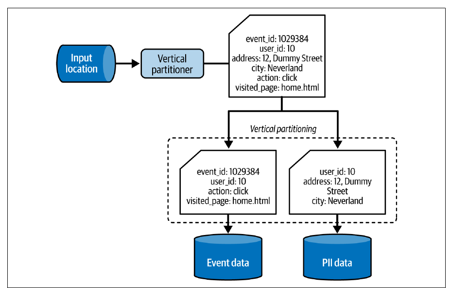

فصل ۷ · صص. ۱۹۷–۲۳۲
الگوهای طراحی امنیت داده
Data Security Design Patterns
Data Engineering Design Patterns, 1st Edition
مجموعهدادهی ارزشمند حسادت میآورد، از جمله از سمت بازیگرهای بدخواه، پس مهندس داده باید به امنیت هم فکر کند. این فصل چهار جنبه را با نُه الگو میپوشاند. حذف داده برای قانونهای حریم خصوصی، یعنی GDPR و CCPA: الگوی Vertical Partitioner ویژگیهای شخصی و immutable را یکبار ذخیره میکند تا حذف به یک ردیف بخورد، در حالی که In-Place Overwriter دادهی موجود را بازنویسی میکند، با یک ناحیهی staging یا با tombstoneهای Kafka. کنترل دسترسی: الگوی Fine-Grained Accessor for Tables ستونها و ردیفها را محدود میکند، با GRANT و policy tag و masking و سیاست ردیفی، و Fine-Grained Accessor for Resources کمینهی اختیار را روی منابع cloud اعمال میکند، با سیاست منبعمحور یا هویتمحور. محافظت از داده: الگوی Encryptor دادهی در حال سکون و در حال انتقال را محافظت میکند، Anonymizer مقدارهای حساس را برمیدارد یا آشفته یا مصنوعی میکند، و Pseudo-Anonymizer آنها را mask یا tokenize یا hash یا رمز میکند و کمی سودمندی را نگه میدارد. اتصال: الگوی Secrets Pointer به credentialهایی ارجاع میدهد که در یک secrets managerاند، و Secretless Connector با هویت IAM یا گواهی، credential را کاملاً برمیدارد.
فهرست خود فصل (از فهرست مطالب کتاب)
- حذف داده — p. 198
- الگو: Vertical Partitioner — p. 198
- الگو: In-Place Overwriter — p. 203
- کنترل دسترسی — p. 207
- الگو: Fine-Grained Accessor for Tables — p. 207
- الگو: Fine-Grained Accessor for Resources — p. 211
- محافظت از داده — p. 215
- الگو: Encryptor — p. 215
- الگو: Anonymizer — p. 219
- الگو: Pseudo-Anonymizer — p. 222
- اتصال — p. 226
- الگو: Secrets Pointer — p. 226
- الگو: Secretless Connector — p. 228
- خلاصه — p. 231
از کتاب
مقدمه
مجموعهدادهها دارایی کسبوکارند و بازیگرهای دیگر بازار به چشمشان دارند، بدخواهها هم (ص. ۱۹۷). امنیت اینجا چهار سمت دارد: انطباق با قانونهای حریم خصوصی مثل GDPR در اروپا و CCPA در آمریکا؛ کنترل دسترسی، چون مجموعهدادهی باز را تیم دیگری میتواند تصادفی بازنویسی کند؛ محافظت از داده، چون حتی با دسترسی به یک مکان، encryption باز هم کلید میخواهد؛ و اتصال، چون مقدار credential در یک repository گیت خطر لو رفتن را بالا میبرد (ص. ۱۹۷).
| جنبه | الگوها |
|---|---|
| حذف داده، یعنی حق فراموش شدن | Vertical Partitioner، In-Place Overwriter |
| کنترل دسترسی | Fine-Grained Accessor برای جدول و برای منابع |
| محافظت از داده | Encryptor، Anonymizer، Pseudo-Anonymizer |
| اتصال | Secrets Pointer، Secretless Connector |
از کتاب
حذف داده
قاعدههای حریم خصوصی میخواهند که دادهی شخصی کاربر سر درخواستش حذف شود (ص. ۱۹۸).
حذف داده
الگو: Vertical Partitioner
صص. ۱۹۸–۲۰۳مسئله. همکارهایی که طراحی حذف دادهی شخصی شما را بررسی میکنند اشاره میکنند که ستونهای تغییرناپذیر، مثل تاریخ تولد و شمارهی شناسایی شخصی، در هر رکورد تکرار شدهاند. هر ویژگی immutable را یکبار ذخیره کنید تا حذف چیز کمتری برای حذف داشته باشد (ص. ۱۹۸).
راهحل (صص. ۱۹۸–۲۰۰): پارتیشنبندی افقی کل رکوردها را گروه میکند، مثلاً بر حسب تاریخ، فصل ۸ را ببینید؛ پارتیشنبندی عمودی هر ردیف را میشکند و بخشها را در جاهای مختلف مینویسد، و این دو ترکیبشدنیاند. ستونهایی را که باید جدا شوند و ویژگیای را که دوباره به هم میرساندشان بشناسید، مثل user_id، و بعد ورود داده را طوری کنید که ویژگیهای mutable را در یک ذخیرهسازی و immutableها و شخصیها را در دیگری بنویسد (شکل ۷-۱)، با projectionهای سادهی SELECT بهعلاوهی قاعدههایی مثل تکراریزدایی. حذف به دادهی خیلی کمتری میخورد، و هر ذخیرهسازی میتواند قاعدهی دسترسی و نگهداری خودش را داشته باشد.


user_id میگذارد consumerها بخشها را دوباره به هم برسانند.پیامدها (صص. ۲۰۰–۲۰۱):
| performance کوئری | گونهای از نرمالسازی است: خوانندهها باید پیوند بزنند، که ترافیک شبکه اضافه میکند |
| پیچیدگی کوئری | با یک view یا یک data catalog یا lineage کمش کنید، یعنی Dataset Tracker در فصل ۱۰ |
| durableی چندزبانی | همان رکورد در یک search engine و یک ذخیرهسازی key-value یعنی شکستن و حذف در هر دو؛ یک job میشکند و consumerهای اختصاصی در هر ذخیرهسازی مینویسند (شکل ۷-۲) |
| دادهی خام | الگو از اولین تبدیل به کار میآید؛ دادهی خام نشکسته راهبرد دیگری میخواهد، مثل دورهی نگهداری کوتاه، که backfill را محدود میکند |
نمونهها (صص. ۲۰۱–۲۰۳): در Spark، foreachBatch دسته را durable میکند، بازدیدها را با حذف context.user در یک topic کافکا با کلید visit_id و ویژگیهای کاربر را در topic دیگری با کلید user_id مینویسد؛ و job دومی contextهای تکراریزداییشدهی کاربر را با MERGE در یک جدول Delta میبرد. حذف: DeltaTable.delete('user_id = "…"') بهعلاوهی VACUUM، وگرنه نسخههای قدیمی باز هم کاربر را نشان میدهند. در Kafka یک tombstone بفرستید، یعنی کلید با مقدار NULL، به topicی که cleanup.policy آن compaction است؛ این برای user_context کار میکند که یک رکورد در هر کلید دارد، ولی برای بازدیدها نه، که compaction فقط آخرین بازدید هر کلید را نگه میداشت.
حذف داده
الگو: In-Place Overwriter
صص. ۲۰۳–۲۰۷مسئله. یک سیستم قدیمی چند ترابایت را در پارتیشنهای افقی زمانمحور دارد و هیچ راهبردی برای دادهی شخصی ندارد، ولی حالا باید به درخواست حذف جواب بدهد؛ بودجهای هم برای بازسازی نیست (ص. ۲۰۳).
راهحل (صص. ۲۰۳–۲۰۵):
| ذخیرهسازی | چطور حذف شود |
|---|---|
| حذف در جا را پشتیبانی میکند | دستور DELETE … WHERE و بعد یک مرحلهی پاکسازی برای فرمتهای time travel، مثل Iceberg و Delta Lake |
| فایلهای خام، یعنی JSON و CSV | کل مجموعهداده بی ردیفهای آن کاربر در یک ناحیهی staging بازنویسی میشود و بعد یک job ارتقا، دادهی عمومی را عوض میکند (شکل ۷-۳) |
| topic کافکای compactشده با رکوردهای کلیددار | topic را بخوانید و کلید هر موجودیت حذفشده را با payload تهی بفرستید |
مفهوم table formatها حذف را یا با deletion vector انجام میدهند، یعنی یک فایل کنارِ کوچک که ردیفهای برداشتهشده را فهرست میکند و سر خواندن فیلتر میشود، یا با بازنویسی فایلها بی آن ردیفها، که نوشتنبر است (ص. ۲۰۴). اگر دورهی نگهداری از مهلت قانونی حذف کوتاهتر باشد، شاید انقضا بهعنوان حذف حساب شود؛ با CDO و دپارتمان حقوقیتان بررسی کنید (ص. ۲۰۵).
flowchart LR
P[("Public dataset")] --> J["Removal job<br/>filter out user X"]
J --> ST[("Staging area<br/>private until complete")]
ST --> PR["Promotion job<br/>replace public data"] --> Pبر پایهی شکل ۷-۳ (ص. ۲۰۴): job حذفی که شکست خورده یا تلاش دوباره خورده هیچوقت مجموعهدادهی عمومی را خراب نمیکند.
پیامدها (ص. ۲۰۵): سرریز I/O، یعنی خواندن و بازنویسی میتواند ذخیرهسازی را با گذر زمان تقریباً دو برابر کند؛ آمارهای Parquet، که Delta Lake و Iceberg هم به کارشان میبرند، میگذارند موتورها از بلوکهای بی آن کاربر بپرند. هزینه، یعنی یک موجودیت حذفشده با دو هزار رکورد یعنی بازنویسی دو هزار رکورد در برابر یک رکورد با Vertical Partitioner؛ درخواستهای حذف را در یک اجرا دسته کنید.
نمونهها (صص. ۲۰۶–۲۰۷): در PySpark، متن خام خوانده میشود، فقط user_id با from_json بیرون کشیده میشود، آن کاربر فیلتر میشود و متن در staging نوشته؛ و بعد aws s3 rm ${BUCKET}/output --recursive و aws s3 mv ${BUCKET}/staging ${BUCKET}/output --recursive، چون تغییر نام در ذخیرهسازی object همان کپی و حذف است و تراکنشی نیست. چون اصل بازنویسی میشود، حذفی باگدار را نمیشود برگرداند، پس الگوی Proxy یا نسخهدار کردن ذخیرهسازی object را به کار ببرید، یعنی S3 و Azure Storage و GCS (ص. ۲۰۷).
اجرا کنید: آزمایش هزینهی حذف داده در vault میشمارد هر دو الگو چند ردیف و چند بایت بازنویسی میکنند.
دادهی شخصی در stack ما hash میشود، ولی درخواست حذف هنوز ممکن است و جدول تراکنشها بزرگترین جدول warehouse است.
?نوبت شما · چرا نگه داشتن ستونهای شخصی در جدولی جدا با کلید customer_id درخواست حذف را ارزانتر میکند؟دیدن پاسخ
حذف بهجای mutation روی همهی partitionهای جدول بزرگ، فقط چند ردیف از جدولی کوچک را پاک میکند، و بقیهی داده بدون آن ستونها دیگر شخصی نیست. این همان Vertical Partitioner است (صص. ۱۹۸–۲۰۳).
از کتاب
کنترل دسترسی
جز انطباق، فقط کاربرهای مجاز باید به حیاتیترین داده برسند، چون داده میتواند بزرگترین دارایی رقابتیتان باشد (ص. ۲۰۷).
کنترل دسترسی
الگو: Fine-Grained Accessor for Tables
صص. ۲۰۷–۲۱۱مسئله. بعد از بردن بارهای HDFS و Hive به یک warehouse در cloud، کاربرها و گروهها دسترسی جدول را کنترل میکنند، ولی ذینفعها میخواهند بعضی کاربرها نتوانند ستونها و ردیفهای معینی را بخوانند (ص. ۲۰۷).
راهحل (صص. ۲۰۷–۲۰۹):
| سطح | پیادهسازی | سیستمها |
|---|---|---|
| ستون | GRANT SELECT(col_A, col_B) ON my_table TO some_user; | Amazon Redshift، PostgreSQL |
| ستون | policy tag در Data Catalog بهعلاوهی نقش Fine-Grained Reader | GCP BigQuery |
| ستون | masking، یعنی ستون دیده میشود ولی محتوایش پنهان است، مثل ip STRING MASK ip_mask که IP را فقط به اعضای engineers نشان میدهد | Databricks Unity Catalog، Snowflake |
| ردیف | شرطهای پویایی که به کوئری اضافه میشوند: ROW FILTER در Databricks، Row-Level Security در Redshift، و row access policy در BigQuery و Snowflake | — |
| ردیف، جایگزین | یک view: … FROM blogs WHERE blog_author = current_user | هر کدام |
پیامدها (ص. ۲۰۹): محدودیت سطح ردیف، یعنی شرطها بیشتر ویژگیهای session را به کار میبرند، مثل کاربر و گروه و IP؛ نوع داده، یعنی فیلدهای تودرتو باید باز شوند یا با Dataset Materializer نشان داده شوند، فصل ۸ را ببینید؛ سرریز کوئری، یعنی جدول یا view برای هر گروه materialize کنید، به قیمت تکرار و governance.
نمونهها (صص. ۲۰۹–۲۱۰): در PostgreSQL، GRANT SELECT(id, login, registered_datetime) ON dedp.users TO user_a که بعدش SELECT * با خطای «permission denied» شکست میخورد؛ ALTER TABLE dedp.users ENABLE ROW LEVEL SECURITY; CREATE POLICY user_row_access ON dedp.users USING (login = current_user);؛ و در DynamoDB شرط IAM روی dynamodb:LeadingKeys برابر ${www.amazon.com:user_id}، پس کاربرها فقط آیتمهایی را میخوانند که کلیدشان با شناسهی خودشان شروع میشود.
کنترل دسترسی
الگو: Fine-Grained Accessor for Resources
صص. ۲۱۱–۲۱۵مسئله. یک audit jobی پیدا میکند که میتوانسته هر مجموعهدادهای در ذخیرهسازی object را بازنویسی کند؛ auditor کمینهی اختیار را توصیه میکند، که کتاب اصل at-least privilege مینامدش: هر مؤلفه فقط مجوزهایی را بگیرد که لازم دارد (ص. ۲۱۱).
راهحل (صص. ۲۱۱–۲۱۳)، دو راهبرد (شکل ۷-۴):
| منبعمحور | هویتمحور | |
|---|---|---|
| مجوزها کجا مینشینند | روی خود منبع | روی کاربر یا نقش |
| نمونه | سیاست IAM یک bucket در GCS که roles/storage.admin را به یک کاربر میدهد، با Terraform | یک نقش IAM در AWS که EMR با sts:AssumeRole برمیداردش، با kinesis:Get*/Describe*/List*/Put* روی stream به نام visits |
مجوزها میتوانند یک منبع یا یک prefix یا شرطهای زمان اجرا را هدف بگیرند؛ مثلاً s3:PutObject در S3 فقط وقتی اجازه داشته باشد که aws:TagKeys با شناسهی کاربر بخورد، یعنی دسترسی tagمحور (ص. ۲۱۳).
پیامدها (ص. ۲۱۴): امنیت کتابی، یعنی سیاستهای ریز و زیاد سخت نگه داشته میشوند؛ یک wildcard مثل visits* سادهاش میکند ولی ممکن است به منابع آینده هم دسترسی بدهد، پس با امنیت توافق کنید. پیچیدگی، یعنی از قاطی کردن دو راهبرد بپرهیزید. سهمیه، یعنی AWS IAM پیشفرض ۱۵۰۰ سیاست سفارشی میدهد و GCP ۳۰۰ نقش سفارشی برای هر پروژه.
نمونهها (صص. ۲۱۴–۲۱۵): فرمان aws s3 ls s3://dedp-visits-301JQN/ با AccessDenied شکست میخورد؛ هویتمحور با نقشی که s3:Get* و s3:List* را روی bucket و objectهایش میدهد درستش کنید، یا منبعمحور با aws s3api put-bucket-policy که principal به نام visits-s3-reader را نام میبرد.
در stack ما Authentik هویت را میدهد و SQL proxy دسترسی هر نفر به warehouse را؛ گروههای Authentik باید به roleهای ClickHouse و Metabase map شوند تا دسترسی یک جا تعریف شود.
?نوبت شما · تحلیلگری تیم را ترک میکند. دسترسیاش را کجا میبندید و چه چیزی ممکن است جا بماند؟دیدن پاسخ
در Authentik: کاربر غیرفعال میشود و هر ابزاری که پشت SSO است بسته میشود. آنچه جا میماند credentialهای بیرون از SSO است، مثلاً token شخصی GitLab یا userی مستقیم در ClickHouse؛ برای همین دسترسی را به role و گروه بدهید، نه به آدم (صص. ۲۰۷–۲۱۵).
از کتاب
محافظت از داده
کنترلهای دسترسی منطقی کافی نیستند؛ خود داده هم باید در برابر استفادهی غیرمنتظره محافظت شود (ص. ۲۱۵).
محافظت از داده
الگو: Encryptor
صص. ۲۱۵–۲۱۹مسئله. ذینفعها میترسند کسی داده را بین brokerها و jobها شنود کند، یا فیزیکی از سرورها بدزدد (صص. ۲۱۵–۲۱۶).
راهحل (صص. ۲۱۶–۲۱۷): در حال سکون، یا encryption سمت client که producer رمز میکند و کلیدها را مدیریت، یا سمت سرور که ذخیرهسازی همه کار را میکند و کلیدها در KMS از AWS و GCP یا Key Vault از Azure مینشینند. خواندن دادهی رمزشده (شکل ۷-۵):
sequenceDiagram
participant C as Client
participant D as Encrypted data store
participant K as Key store (KMS / Key Vault)
C->>D: 1. read request
D->>K: 2. get decryption key (fails if client not authorized)
K-->>D: key
D->>D: 3. decrypt data
D-->>C: 4. decrypted recordsبر پایهی شکل ۷-۵ (صص. ۲۱۶–۲۱۷). در حال انتقال: ارتباط امن را در SDK سمت client روشن کنید و روی سرویس یک نسخهی پروتکل را الزامی کنید (ص. ۲۱۷).
پیامدها (صص. ۲۱۷–۲۱۸): سرریز CPU در هر خواندن و نوشتن؛ خطر از دست رفتن داده اگر کلید گم شود، که تأمینکنندهها کلیدها را با دورهی مهلت حذف نرم میکنند؛ و بهروزرسانی پروتکل، یعنی TLS نسخهی ۱٫۰ و ۱٫۱ منسوخ شدهاند (RFC 8996)، پس سرویسها باید ارتقا پیدا کنند.
نمونهها (صص. ۲۱۸–۲۱۹): یک ماژول KMS در Terraform با key_usage = "ENCRYPT_DECRYPT" و deletion_window_in_days = 14 که پنجرهی برگرداندن است و یک grant با Encrypt و Decrypt و GenerateDataKey به یک نقش IAM؛ aws_s3_bucket_server_side_encryption_configuration با sse_algorithm = "aws:kms"؛ و در Azure Event Hubs minimum_tls_version = "1.2".
محافظت از داده
الگو: Anonymizer
صص. ۲۱۹–۲۲۲مسئله. یک شرکت تحلیلی بیرونی رفتار مشتریها را تحلیل خواهد کرد، ولی بعضی کاربرها به اشتراک PII با طرف سوم رضایت ندادهاند (ص. ۲۱۹). همین برای دادهی PHI، یعنی اطلاعات سلامت محافظتشده، و IP، یعنی مالکیت فکری، هم برقرار است (ص. ۲۲۰).
راهحل (صص. ۲۲۰–۲۲۱): ردیفها را ناشناس کنید تا consumer نتواند کاربر را بشناسد:
| روش | نمونه |
|---|---|
| حذف داده | ستونها را بیندازید |
| آشفتگی داده | نوفه اضافه کنید؛ مثلاً IP 123.456.789.012 میشود 1823.456.7809.012 |
| جابهجایی با دادهی مصنوعی | یک تولیدکننده، احتمالاً ML، جانشینهای واقعنما میسازد؛ مثلاً Portugal میشود Croatia |
پیامدها (ص. ۲۲۱): از دست رفتن اطلاعات، یعنی تحلیلگرها و data scientistها نمیتوانند آن ستونها را به کار ببرند، که میتواند یعنی مدل و بینش غلط.
نمونهها (صص. ۲۲۱–۲۲۲): در PySpark، users.drop('birthday').withColumn('email', replace_email(users.email))، که در آن یک UDF از جنس pandas با کتابخانهی Faker ایمیل تصادفی میسازد.
محافظت از داده
الگو: Pseudo-Anonymizer
صص. ۲۲۲–۲۲۶مسئله. شریک تحلیلی با مجموعهدادهی ستونحذفشده نمیتواند بیشتر پرسشها را جواب بدهد؛ میخواهد PII واقعی پنهان باشد ولی به شکلی بهکارآمدنیتر (ص. ۲۲۲).
راهحل (صص. ۲۲۲–۲۲۳):
| روش | چطور | برگشتپذیر؟ |
|---|---|---|
| masking داده | مقدار 999-55-1040 میشود XXX-XX-1040 یا 9XX-5X-1XXX | نه؛ چند کاربر میتوانند یک mask داشته باشند |
| tokenization | مقدارهای خیالی، با mappingی که در یک token vault امن میماند | بله، با دسترسی به vault |
| hashing | الگوریتم SHA-256 و Base64 روی contact@waitingforcode.com | نه |
| encryption | کلید در سطح ستون یا ردیف | بله، با کلید |
تفاوت anonymization و pseudo-anonymization (ص. ۲۲۳): دادهی pseudo-anonymized در ترکیب با مجموعهدادههای دیگر میتواند شناساییپذیر شود، در حالی که دادهی anonymized نمیتواند.
پیامدها (صص. ۲۲۳–۲۲۴): حس دروغین امنیت؛ نمونهی کتاب: یک جدول سلیقهی غذایی، که کاربر ۱۰۰۰ هویج و بروکلی و سیبزمینی دوست دارد و چیپس و شکلات را نه، که با جدول ثبتنام پیوند میخورد و در آن کشور S*n M****o و نقش C******h P*******r i******r است، به سانمارینو و مخترع framework خیالی Cheetach Processor اشاره میکند، یعنی John Doe (جدولهای ۷-۱ و ۷-۲). تعمیم دادن به «اروپا» و «مهندس نرمافزار» جلویش را میگرفت. از دست رفتن اطلاعات، یعنی 999-55-1040 و 999-13-1040 هر دو به XXX-XX-1040 تبدیل میشوند؛ و تعمیم عددها را به بازهی متنی تبدیل میکند، یعنی از دست رفتن نوع.
نمونهها (صص. ۲۲۴–۲۲۵): متد mapInPandas کشورها را به ناحیه map میکند، یعنی Poland و France و Spain به eu و USA به na، و شمارههای SSN را به f'{ssn[0]}***-{ssn[5]}***-{ssn[10]}***' تبدیل میکند؛ و یک withColumn جدا، salary را به بازههای 0-50000 و 50000-60000 و 60000+ تبدیل میکند، چون نوعش عوض میشود.
نمونهی ۷-۲۶ (ص. ۲۲۵): بعد از pseudo-anonymization
| user_id | country | ssn | salary |
|---|---|---|---|
| ۱ | eu | 0***-0***-1*** | 0-50000 |
| ۲ | eu | 0***-0***-1*** | 50000-60000 |
| ۳ | na | 1***-0***-3*** | 60000+ |
| ۴ | eu | 8***-1***-9*** | 50000-60000 |
Vault note: حقوق دقیقاً برابر پنجاه هزار در شاخهی اول CASE میافتد، یعنی BETWEEN 0 AND 50000، و از همینجاست که کاربر ۱ در 0-50000 مینشیند؛ کرانهای دوطرفهشاملِ BETWEEN بازههای همسایه را همپوشان میکنند.
از کتاب
اتصال
داده داخل سیستمها و بین آنها جریان دارد و دسترسی هم باید امن باشد (ص. ۲۲۶).
اتصال
الگو: Secrets Pointer
صص. ۲۲۶–۲۲۸مسئله. یک pipeline بیدرنگ بازدیدها را با یک API موقعیت جغرافیایی بیرونی غنی میکند که فقط نام کاربری و گذرواژه میگیرد. تیم شما یکبار credential یک API درخواستمحاسب را لو داده و صورتحساب بالا رفته؛ دیگر در کد ذخیرهشان نکنید (ص. ۲۲۶).
راهحل (صص. ۲۲۶–۲۲۷): مقدار credential را در یک secrets manager نگه دارید، مثل Google Cloud Secret Manager و AWS Secrets Manager، و با نام ارجاعش بدهید؛ consumerها مقدارها را سر اجرا میگیرند و میتوانند cache کنند. سودش: یکجا برای monitoring و چرخش. محافظت دوسطحی است، یعنی اول دسترسی به secrets manager با همان الگوهای دسترسی دانهریز، و بعد اعتبار خود credential.
پیامدها (ص. ۲۲۷): بیاعتبار کردن cache، که یکی از «دو چیز سخت» Phil Karlton است، یعنی credential cacheشده میتواند کهنه باشد؛ سادهترین کار این است که بگذارید job شکست بخورد و سر راهاندازی دوباره بار شود، با نوشتن idempotent، یا asynchronous تازهاش کنید، که در میانهی نوشتن پرخطر است. logها باز هم میتوانند secret را لو بدهند. secret باز هم secret میماند، یعنی کسی، مثل یک admin یا IaCی که مقدار تصادفی میسازد، باز هم باید بسازدشان.
نمونهها (ص. ۲۲۸): در boto3، secretsmanager_client.get_secret_value(SecretId='user') و همان برای 'pwd'، که به خوانندهی JDBC در Spark داده میشود. وقتی IaC برای هر محیط secret با همان نامها میسازد، کد به فایل تنظیم جدا برای هر محیط نیاز ندارد.
اتصال
الگو: Secretless Connector
صص. ۲۲۸–۲۳۱مسئله. تیم کوچکی که سرویس پردازش تازهای را به کار میگیرد فقط نمونههای کلید API پیدا میکند و میخواهد بی هیچ credentialی در کد به منابع cloud دسترسی داشته باشد (ص. ۲۲۸).
راهحل (صص. ۲۲۹–۲۳۰):
| پیادهسازی | چطور |
|---|---|
| IAMمحور | سیاستها به کاربر و گروه و نقش، از جمله کاربرهای برنامهای مثل jobهای زمانبندیشده، کارهایی را روی منابع میدهند، و سرویس از IAM میپرسد که صدازننده اجازه دارد یا نه (شکل ۷-۶) |
| گواهیمحور | یک certificate authority گواهیها را سر اتصال اعتبارسنجی میکند |
پیامدها (ص. ۲۳۰): برداشت بیکار بودن، یعنی باز هم هویتها را تنظیم میکنید، مثل مجوزهای assume-role در AWS برای گرفتن credential موقت از STS. چرخش گواهی یا کلید: تازهها را صادر کنید، قدیمی و تازه را هر دو بپذیرید تا consumerها تأیید کنند، و بعد قدیمی را بیندازید.
نمونهها (صص. ۲۳۰–۲۳۱): از Spark به PostgreSQL با ssl: true و sslmode: verify-full، که نام host باید با گواهی بخورد، و sslrootcert، بی گذرواژه؛ و در GCP یک google_service_account و یک google_storage_bucket_iam_binding با roles/storage.objectViewer روی visits و یک google_dataflow_job که با همان service account اجرا میشود.
credential دیتابیسهای منبع نباید در YAML loader یا repo deployment باشد.
?نوبت شما · Argo CD همهچیز را از Git میخواند. password منبع A کجا باید باشد؟دیدن پاسخ
در یک secret store، و manifest فقط به آن اشاره کند، مثلاً Kubernetes Secretی که External Secrets یا Sealed Secrets پرش میکند. این Secrets Pointer کتاب است: کد فقط pointer را میشناسد، نه خود secret را (صص. ۲۲۶–۲۲۸).
از کتاب
خلاصه
حذف داده، که Vertical Partitioner حذف ارزان میدهد و In-Place Overwriter همهجاکار ولی گران است؛ دسترسی دانهریز برای جدولها و منابع cloud؛ محافظت با encryption و anonymization و pseudo-anonymization؛ و اتصال با ارجاع به secret یا بی هیچ secretی (صص. ۲۳۱–۲۳۲).
مرور
بدهبستانها در یک نگاه
| Vertical Partitioner | In-Place Overwriter | |
|---|---|---|
| ردیفهای دستخورده برای هر کاربر حذفشده | یکی | همهی رکوردهای آن کاربر |
| کار اولیه | طراحی دوبارهی ورود داده | ندارد |
| خواندن | پیوند لازم است | دستنخورده |
| Anonymizer | Pseudo-Anonymizer | |
|---|---|---|
| شناسایی دوباره با پیوند | ناممکن | ممکن |
| سودمندی برای تحلیل | کم | بیشتر |
| برگشتپذیر | نه | در tokenization و encryption: بله |
| Secrets Pointer | Secretless Connector | |
|---|---|---|
| مقدار credential وجود دارد | بله، در یک secrets manager | نه، با هویت IAM یا گواهی |
| خطر اصلی | cache کهنه، log | تنظیم، چرخش گواهی |
مرور
نکتههای کلیدی
- دادهی شخصی را یکبار ذخیره کنید تا حذفش ارزان شود: با Vertical Partitioner، برداشتن کاربری با دو هزار رکورد یعنی حذف یک ردیف، نه بازنویسی دو هزار رکورد (صص. ۱۹۸–۲۰۰، ۲۰۵).
- حذف کردن همان پاک کردن نیست: table formatها نسخههای قدیمی را تا
VACUUMنگه میدارند، و Kafka به tombstone و compaction نیاز دارد، که compaction فقط به topicهایی میخورد که یک رکورد در هر کلید دارند (صص. ۲۰۲–۲۰۵). - با ناحیهی staging بازنویسی کنید: job حذفی که تلاش دوباره خورده یا شکست خورده هیچوقت نباید مجموعهدادهی عمومی را نیمهنوشته بگذارد (صص. ۲۰۴، ۲۰۶).
- دسترسی دانهریز در سطح ستون و ردیف در warehouseها کار میکند، و در سطح منبع و prefix و tag و شرط در cloud، ولی سیاستهای ریز و زیاد به سقف نگهداری و سهمیه میخورند (صص. ۲۰۷–۲۱۴).
- عمل encryption میتواند خودتان را هم بیرون بگذارد: گم شدن کلید یعنی گم شدن داده، و از همینجاست کلیدهای حذفنرمشده با پنجرهی برگرداندن (صص. ۲۱۷–۲۱۸).
- دادهی pseudo-anonymized در ترکیب با مجموعهدادههای دیگر میتواند دوباره شناسایی شود، در حالی که دادهی anonymized نمیتواند، ولی اطلاعات بیشتری از دست میدهد (صص. ۲۲۳–۲۲۴).
- مقدار credential باید ارجاع باشد یا اصلاً نباشد: secrets managerها متمرکزش میکنند، و نقشهای IAM و گواهیها کاملاً برمیدارندش، ولی cache و log و چرخش باز هم دقت میخواهند (صص. ۲۲۶–۲۳۰).
تمرین
خودتان را بسنجید
پرسشها و پاسخها مال vault است و از روی یادداشتهای بالا نوشته شده؛ پاسخها به صفحههای کتاب ارجاع میدهند.
۱کاربری دو هزار رکورد بازدید دارد. با هر الگوی حذف، چند رکورد باید حذف شود؟دیدن پاسخ
با Vertical Partitioner یک ردیف در ذخیرهسازی دادهی شخصی، و با In-Place Overwriter همهی دو هزار رکورد باید بازنویسی شوند (ص. ۲۰۵).
۳چرا مجموعهدادهی بازنویسیشده را اول در ناحیهی staging بنویسیم؟دیدن پاسخ
jobی که شکست خورده یا تلاش دوباره خورده و مستقیم در مکان نهایی مینویسد میتواند دادهی جزئی بگذارد یا داده از بین ببرد؛ staging نتیجه را تا کامل شدن خصوصی نگه میدارد و فقط بعدش یک job ارتقا مجموعهدادهی عمومی را عوض میکند (صص. ۲۰۴، ۲۰۶).
۴چرا tombstone کافکا برای topic به نام user_context خوب است ولی برای topic بازدیدها نه؟دیدن پاسخ
عملیات compaction فقط آخرین رکورد هر کلید را نگه میدارد. موضوع user_context یک رکورد در هر کاربر دارد، ولی بازدیدها کلیدها را بین رویدادهای زیادی شریکاند، پس compaction فقط آخرین بازدید را میگذاشت (صص. ۲۰۲–۲۰۳).
۶چرا یک مجموعهدادهی pseudo-anonymized باز هم میتواند کسی را بشناساند؟دیدن پاسخ
در ترکیب با مجموعهدادههای دیگر، مقدارهای نیمهmaskشده، مثل S*n M****o و عنوان شغلی maskشده، میتوانند به یک نفر برسند؛ روش anonymization در عوض تعمیمشان میدهد یا برمیداردشان (صص. ۲۲۳–۲۲۴).
مکمل
فراتر از کتاب
مکمل vault، نه از متن کتاب.
- شناسایی دوباره با پیوند زدن مجموعهدادههای «ناشناس» خوب مستند است: Latanya Sweeney در سال ۲۰۰۰ نشان داد کد پستی و تاریخ تولد و جنسیت بهتنهایی بیشتر آمریکاییها را میشناسانند، که نسخهی واقعی نمونهی سانمارینوی کتاب است.
- آن چیزی که کتاب at-least privilege مینامد، معمولاً principle of least privilege نامیده میشود (Saltzer و Schroeder، سال ۱۹۷۵).
قدمهای بعدی
ادامه بدهید
اجرا کنید
وقتی کاربری میخواهد فراموش شود، چقدر باید بازنویسی شود؟ این آزمایش یک مجموعهدادهی ساختگی بازدید با نود پارتیشن روزانه و چهار فایل در هر پارتیشن میسازد، بهعلاوهی یک کاربر سنگین با همان دو هزار بازدید کتاب. دو روش را مقایسه میکند. الگوی In-Place Overwriter هر فایلی را که یکی از ردیفهای آن کاربر را دارد بازنویسی میکند. با Vertical Partitioner، ویژگیهای شخصی کاربر یکبار در جدول جدای user context ذخیره میشوند. بعد مقایسه میکند که صد درخواست حذف را یکییکی پردازش کنید یا در یک اجرا دسته کنید.
cd books/data-engineering-design-patterns/lab/07-removal-cost
python3 removal_cost.pyپیوندها
- اجرا کنید: هزینهی حذف دادهی شخصی؛ ردیفها و بایتهایی که Vertical Partitioner در برابر In-Place Overwriter بازنویسی میکنند.
- فصلهای مرتبط: فصل ۲: ورود داده که Transformation Replicator از Anonymizer استفاده میکند و Compactor و VACUUM را دارد، فصل ۴: ویژگی idempotency که Proxy را برای برگرداندن دارد، فصل ۸: ذخیرهسازی داده که پارتیشنبندی افقی و عمودی و Dataset Materializer را دارد، و فصل ۱۰: observability داده که Dataset Tracker را دارد.